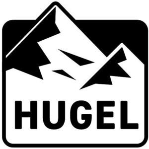

Trade Mark Journal No.2025/024 13 June 2025
WO0000001845105 (21)
Office of origin: Japan
Date of International Registration:20 January 2025
Date of designation in the UK:
20 January 2025

- Class 21
- Gloves for household purposes; cooking pots, nonelectric; cooking pans; pressure cookers, non-electric; stew-pans; saucepans; roasting pans; frying pans, non-electric; coffeepots, non-electric; kettles, non-electric; beverageware; portable coolers, non-electric; kitchen containers for rice; food preserving jars of glass; drinking flasks; insulating flasks; portable cool boxes, non-electric; ice buckets; sugar tongs; nutcrackers; pepper pots; sugar bowls; colanders; salt cellars; Japanese style cooked rice scoops (shamoji); funnels; drinking straws; non-electric bottle openers; egg cups; pie servers; table napkin holders; napkin rings; trivets; chopsticks; chopstick cases; serving ladles; cooking sieves; trays for household purposes; toothpicks; toothpick holders; cleaning instruments, hand-operated; dusting apparatus, non-electric; drying racks for laundry; dustpans; polishing cloths; brooms; mops; clothes drying hangers; diaper disposal pails; rotary washing lines; dustbins for household purposes; dishcloths; dishwashing brushes; saucepan scourers of metal; steel wool for cleaning; adhesive rollers for cleaning; adhesive refill sheets for rollers for cleaning; car washing mitts; scrubbing brushes; clothes-pegs; laundry balls, empty; washtubs; cloths for cleaning; abrasive pads for kitchen purposes; dusting cloths; toilet brushes; broom handles; mop wringer buckets; polishing apparatus and machines, for household purposes, non-electric; ironing boards; empty spray bottles; candle extinguishers; candle holders; coal scuttles; cold packs for chilling food and beverages; kitchen utensils; kitchen containers; tableware, other than knives, forks and spoons; thermally insulated containers for food; heat-insulated containers for household use; pots; pot lids; containers for household or kitchen use; hot pots, non-electric; non-electric cooking steamers; coffee filters not of paper being part of non-electric coffee makers; non-electric griddles; cups; drinking glasses; mugs; lunch boxes; fitted picnic baskets, including dishes; bread bins; teapots; butter dishes; pitchers; water bottles sold empty; drinking bottles for sports; vacuum bottles; heat-insulated containers for beverages; isothermic bags; cruets; spice sets; salt shakers; coasters, not of paper or textile; kitchen mitts; whisks, non-electric, for household purposes; blenders, non-electric, for household purposes; graters for kitchen use; pepper mills, hand-operated; kitchen grinders, non-electric; crushers for kitchen use, non-electric; fruit presses, non-electric, for household purposes; cutting boards for the kitchen; bread boards; salad tongs; ice tongs; strainers for household purposes; scoops for household purposes; coffee grinders, hand-operated; noodle machines, hand-operated; spatulas for kitchen use; tea bag rests; baking mats; grills in the nature of cooking utensils; cookery molds; cake molds; waffle irons, non-electric; cake decorating tips and tubes; thermal insulated bags for food or beverages; portable cooking kits for outdoor use; insect collectors' boxes; cosmetic utensils; combs; hair brushes; facial sponges for applying make-up; nail brushes; toothbrushes; toothbrush cases; toilet cases; powder puffs; make-up brushes; cosmetic spatulas; perfume sprayers; bath sponges; eyelash separators; eyelash brushes; pet feeding bowls; pet drinking bowls; feeding vessels for pets; flower pots; aromatic oil diffusers, other than reed diffusers, electric and non-electric; soap dispensing bottles; lint removers, electric or non-electric; ultrasonic pest repellers; electric devices for attracting and killing insects.
IRIS OHYAMA INC.